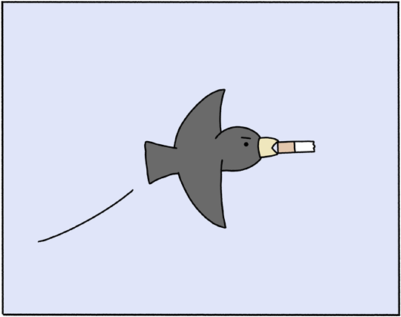

Avaliação:
N/W
Favoritar:
Poorly Drawn Lines
Descrição
"Poorly Drawn Lines" é uma webcomic que apresenta uma série de tirinhas humorísticas e satíricas, criadas pelo artista Reza Farazmand. O foco da webcomic está no humor absurdo e nas situações do dia a dia que são apresentadas de forma criativa e muitas vezes surpreendente. Os personagens variados, que incluem humanos, animais e criaturas fictícias, vivem aventuras estranhas e interações sociais bizarras, tudo isso enquanto exploram temas que abrangem desde a vida cotidiana até a cultura pop, ciência e existencialismo. "Poorly Drawn Lines" é conhecida por seu estilo de desenho simples e peculiar, que adiciona um toque único à comédia das tirinhas. Com seu humor irreverente e muitas vezes surreal, a webcomic atrai leitores que apreciam uma visão cômica e crítica do mundo que nos cerca, por meio de personagens e situações surpreendentes. É uma leitura divertida e inesperada para aqueles que gostam de humor não convencional e imaginação desenfreada.
Outras informações
- Altor: Reza Farazmand
- Lingua: Ingles